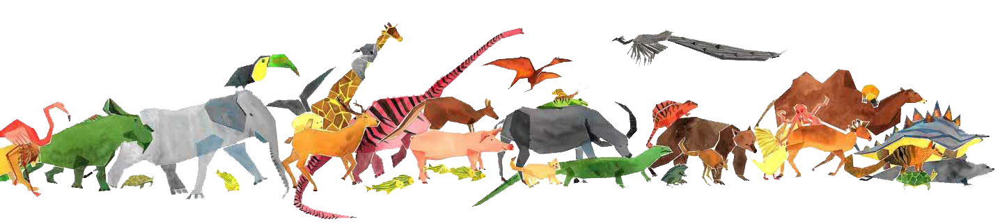
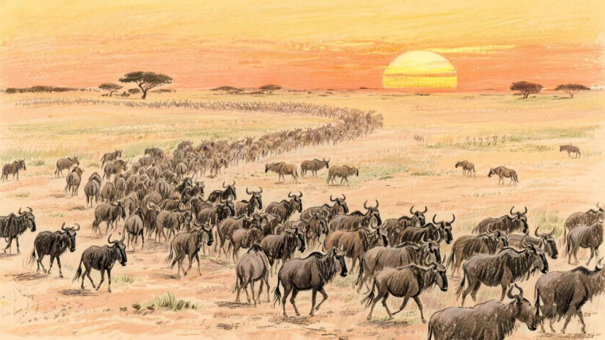
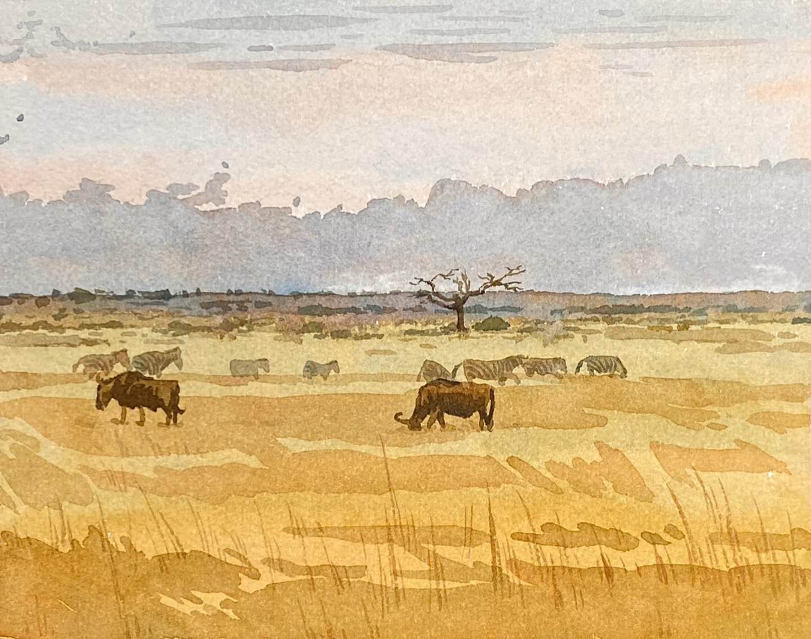
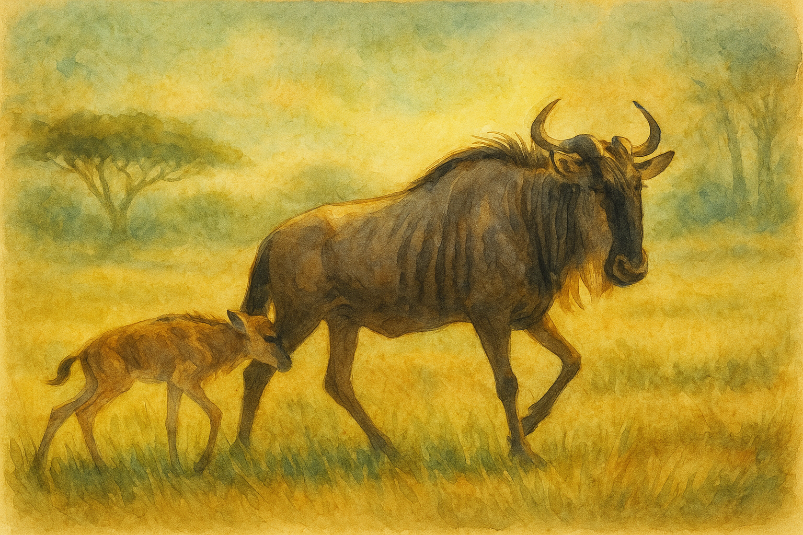
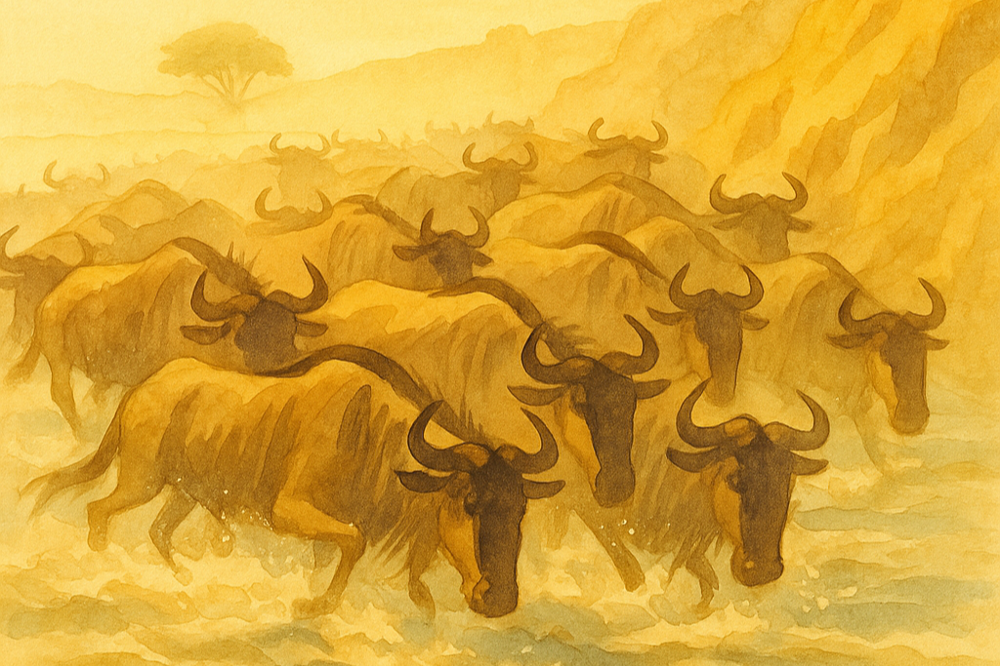
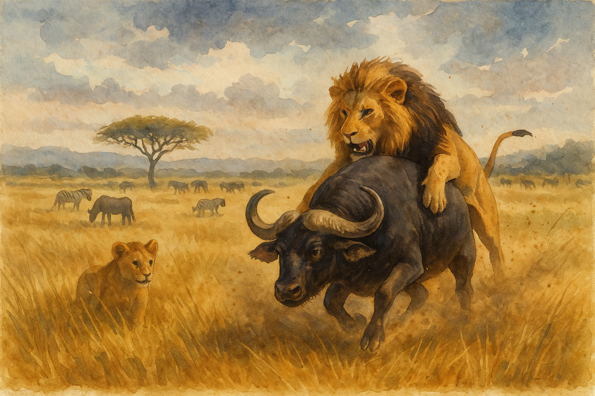
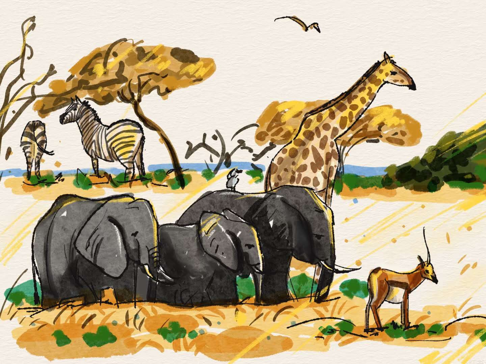

The Great Migration
Have you ever wondered what it looks like when an entire continent starts moving? Every year, more than a million wildebeest, zebras, and gazelles set off across East Africa — not because they're lost, but because the rain has called them. What makes them leave behind green pastures and plunge into danger? How do they all know which way to go? From the plains of Serengeti to the Mara River crossings, their hooves trace invisible highways older than memory. The Great Migration isn't just about movement; it's about survival, timing, and instinct — a living rhythm that connects grass, water, and every creature that depends on them.
Dry Season (Jun-Sep)
The sun scorches, and the rivers turn into threads of dust. As the dry season grips the Serengeti, the wildebeest begin their march north. Why north? Because far ahead, across the invisible line into Kenya, the Mara plains still shimmer with water and promise. It's a long, perilous road — calves stumble, crocodiles wait at shrinking rivers, and predators follow close behind. Yet they move, day after day, forming endless lines that can be seen from space. This is the first chapter of their yearly circle: a journey written in dust and determination.
Short Rains (Oct-Nov)
At last — clouds gather, thunder grumbles, and the first drops fall. The wildebeest pause, sniffing the air; the scent of wet soil means one thing: time to turn back. After months in the Mara, the herds begin their slow return south, following the same path but under gentler skies. Calves, now stronger, leap through puddles. The plains blush green again. The short rains are nature's sigh of relief — a brief moment when the savanna rests, catches its breath, and prepares for the grand storm to come.
Wet Season (Dec-Mar)
Then comes the rain — real rain, not a drizzle but a downpour that wakes the world. The southern Serengeti turns into a nursery: thousands of newborn calves wobble on their new legs. Why do they all give birth here, now? Because the grass is soft, the predators fewer, and the rain hides their scent. Within minutes of birth, the calves must run — no time for clumsy first steps in this school of survival. As the plains echo with thunder and tiny hooves, the circle of life closes... only to begin again.
Early Dry (Apr-May)
When the rains fade, the southern plains begin to crack, and the wildebeest know it's time to move again. But instead of rushing north, they drift west, following the green trail left by the receding clouds. The Grumeti River becomes their compass — a winding, muddy highway that leads them through acacia woodlands and crocodile country. Calves now strong enough to run keep close to their mothers, while the bulls argue over who gets to lead (no one really wins). It's a quieter, steadier leg of the migration — less famous than the Mara crossings, but just as vital. Every hoofstep westward writes the prelude to the great northward surge that soon follows.
Predator Dynamics: Tsavo Lions
Far to the east, Tsavo's lions live by the same calendar. When wildebeest march north, prey here grows scarce. The lions adapt — hunting at night, stalking near waterholes, or simply waiting, patient as stone. What do they think of the rains that never reach them? Perhaps envy, perhaps opportunity. When the rains return south, prey follows, and the lions' world wakes again. The dance of predator and prey continues, choreographed not by choice but by the rhythm of the sky.
Why It Matters
The wildebeest migration is more than a spectacle — it's nature's heartbeat. Every hoofprint turns the soil, spreads seeds, and feeds life unseen. Take away the herds, and the grasslands would fade, the predators would vanish, and even the rivers would run dry. Protecting their path isn't just saving animals; it's preserving motion itself — that wild, thundering pulse that keeps Africa alive. Without it, the savanna would fall silent. And really, what's Africa without that sound?
Data: Movebank (processed to GeoJSON). Author: Xiaoqing Chen